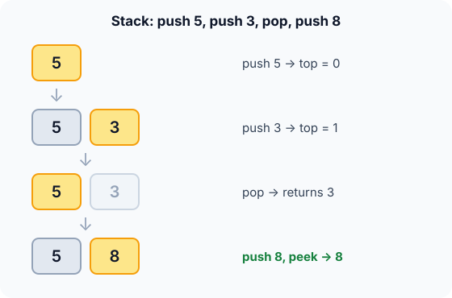

Prerequisites
- Arrays and indices.
- Structs in C.
- The idea of "the most recent" item.
The analogy
Everyday analogy
Think of a stack of plates. You put clean plates on top, and you take plates from the top. You never pull one from the middle.
A software stack works the same way. The last value pushed is the first one popped, so the most recent item is always the one you get back.
How it works
Start with a sequence of operations by hand
Start with an empty stack. The array version keeps top, the index of the top item (−1 when empty). Predict, then open "Check".
Example: predict before you read
Step 1. push 5, push 3. Predict the contents, bottom to top, and the value of top.
Check
[5, 3] with 3 on top, and top = 1.
Step 2. Cover the next line and guess: what does pop return?
Check
3, the last item pushed. The stack is now [5] and top = 0.
Step 3. push 8, then peek. Predict what peek returns and whether the stack changes.
Check
peek returns 8 and changes nothing: the stack stays [5, 8].

Quick recall: Before reading further, cover the text above and say out loud: which item does pop always return?
Check your answer
The most recently pushed item still on the stack, the top.
Finish the picture: matching brackets
Check "([])": push every open bracket; at a close bracket, pop and check it matches.
( [ ]. Predict the stack after reading these three characters.Check
Push
(, push[, then]pops[, a match. The stack is[(].- The final
). Predict the result.Check
It pops
(, a match. The stack is empty at the end, so the string is balanced.
Quick recall: Without scrolling up, say out loud: why does "([)]" fail the bracket check?
Check your answer
When ) arrives, the top of the stack is [, not (. The most recent open bracket must be closed first.
The rule in plain words
Keep the items in an array and an index top (−1 when empty). push: increase top, store. pop: read at top, decrease it. peek: read at top only.
Only the top is ever touched, so every operation is a constant amount of work.
Quick recall: Before you read the code, write what push and pop do to top in your own words. Then check below.
Check your answer
push: move top up one, then store the value there. pop: read the value at top, then move top down one.
The code
Read this code after you have done the operations by hand. It will make more sense.
typedef struct { int data[100]; int top; } Stack; /* top = -1 when empty */
void push(Stack *s, int v) { s->data[++s->top] = v; } /* caller checks top < 99 */
int pop(Stack *s) { return s->data[s->top--]; } /* caller checks !is_empty */
int peek(const Stack *s) { return s->data[s->top]; }
int is_empty(const Stack *s) { return s->top == -1; }int balanced(const char *s) { /* "([])" -> 1, "([)]" -> 0 */
char st[100]; int top = -1;
for (int i = 0; s[i]; i++) {
char c = s[i];
if (c == '(' || c == '[') st[++top] = c;
else if (c == ')' || c == ']') {
char want = c == ')' ? '(' : '[';
if (top < 0 || st[top--] != want) return 0; /* nothing open, or wrong kind */
}
}
return top == -1; /* every bracket was closed */
}Definition
What you just did, in one line: a stack is a collection where you add (push) and remove (pop) only at the top, so the last item in is the first out (LIFO).
flowchart TD
A["read next character"] --> B{"open bracket?"}
B -->|yes| C["push it"]
B -->|no| D{"close bracket?"}
D -->|yes| E{"stack empty or top doesn't match?"}
E -->|yes| F["not balanced"]
E -->|no| G["pop"]
C --> A
G --> A
D -->|"no more characters"| H{"stack empty?"}
H -->|yes| I["balanced"]
H -->|no| F
"((", which final box do you reach? (Answer: "not balanced", because the stack still holds two brackets at the end.)How fast is it?
Quick recall: Before looking at the table, predict: does pop get slower when the stack holds a million items?
Check your answer
No. It only touches the top slot, so it is $O(1)$ whatever the size.
Each operation touches only the top slot. For a string of $n$ characters, the bracket check does at most one push and one pop per character:
$$\text{work} \;\le\; n \cdot O(1) \;=\; O(n), \qquad \text{extra space} \le n$$| Operation | Cost | Why |
|---|---|---|
| push | $O(1)$ | Write one slot at top + 1 |
| pop | $O(1)$ | Read one slot, move top |
| peek / is_empty | $O(1)$ | Look at top only |
| Search for a value | $O(n)$ | Not what a stack is for: you'd have to pop through |
Warning
These short functions don't check bounds. Popping an empty stack (underflow) or pushing onto a full one (overflow) reads or writes outside the array. Check is_empty before pop and the capacity before push.
Exam tip
Expect a trace question: "push 1, push 2, pop, push 3, pop, pop: what is printed?" Answer: 2, 3, 1. Write the stack after every step.
Common mistakes
- Popping without checking that the stack is non-empty.
- Confusing stack and queue order: a stack returns the newest item.
- Forgetting to check that the stack is empty at the end of the bracket check:
"(("must fail.
Try it yourself
Exercise 1 (warm-up)
Starting empty: push 1, push 2, pop, push 3, pop, pop. Which values are popped, in order?
Hint
Write the stack after each step.
Answer
2, then 3, then 1.
Exercise 2 (a bit harder)
Use a stack to evaluate the postfix expression 3 4 + 2 * (numbers are pushed; an operator pops two numbers and pushes the result). What is the result, and what is on the stack just before *? Write your answer down before you open it.
Show answer
Push 3, push 4; + pops them and pushes 7; push 2. Before * the stack is [7, 2]; * pushes 14. The result is 14.
Did you know?
Did you know?
Every running program has a stack built in: the call stack. Each function call pushes a frame with its local variables, and returning pops it. A "stack overflow" error is literally that stack running out of space, often from runaway recursion.
Undo in an editor, the back button of a browser, and depth-first search all use a stack, so this tiny structure is everywhere.
Key points to remember
If you remember one thing from each line, remember the because.
- The last item pushed is the first popped because both push and pop work at the same end, the top.
- Every operation is $O(1)$ because only the top slot is ever read or written.
- Bracket matching works because the most recent unclosed bracket is always the one that must close next.
- Underflow and overflow must be checked because the array has fixed bounds.
- Recursion uses a stack because the most recent call must finish first.
Self-check questions
Answer these in order, out loud. They follow the page, so your answers become the script of your video.
- How is a stack like a pile of plates?
Sample answer
You add and remove plates only at the top, so the last plate added is the first one taken.
- Walk through push 5, push 3, pop, push 8, peek.
Sample answer
After the pushes the stack is [5, 3]; pop returns 3, leaving [5]; push 8 gives [5, 8]; peek returns 8 without removing it.
- Why does
pushuse++s->topbutpopusess->top--?A good answer says when
topchanges relative to the read or write.Sample answer
push must move to the next free slot before writing; pop must read the current top before moving down. Prefix and postfix give exactly those orders.
- So what is a stack, in one sentence?
Sample answer
A last-in, first-out collection where you push and pop only at the top.
- Why does a stack solve bracket matching?
A good answer mentions the most recent open bracket.
Sample answer
A closing bracket must match the most recent unclosed opening bracket, and the stack's top is exactly that bracket.
- What do push, pop, peek and search cost?
Sample answer
push, pop and peek are $O(1)$; searching for an arbitrary value is $O(n)$, but that isn't a stack operation.
- What happens if you pop an empty stack, and how do you prevent it?
Sample answer
It reads outside the array (underflow). Check
is_emptybefore popping and report an error instead. - If you had to teach this to a friend in 2 minutes, what would you leave out, and why?
Sample answer
I'd leave out the postfix example and the
++topdetails. I'd keep the plate analogy, push 5, push 3, pop → 3, and "LIFO, everything $O(1)$, used for undo and brackets".
External resources
- VisuAlgo: Stack: choose "Stack" and animate push and pop.
- GeeksforGeeks: Stack data structure: array and linked-list versions with applications.
- Wikipedia: Stack: history and uses such as the call stack.
Videos
- YouTube search: stack and balanced parentheses: pick a walkthrough of the bracket check.